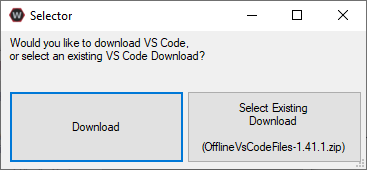

Note
This setup is for Java/C++ only
Offline Installer¶
Warning
Windows 7: You must install the standalone version of .NET Version 4.62+ which can be found here. Before preceding!
The offline installation files will be located in the USB provided inside the collection. Locate and run the file named WPILibInstaller_Windows64-2020.3.2.exe or WPILibInstaller_Windows32-2020.3.2.exe based on your OS.

Installing for All Users will require admin privileges and install for all users on the machine.
Note
Software will be installed to C:\Users\Public\wpilib\YYYY. YYYY Corresponds to the currently suppored year.
Download VS Code
Due to licensing reasons with VS Code the installer does not contain it bundled in. To overcome this hit the Select/Download VS Code button.

This will open up the selector tool.
Select the Select Existing Download option and then select the file
OfflineVsCodeFiles-1.41.1.zip. This will change back to the installer window and Execute Install can be run.
What was just Installed
Visual Stuido Code - The prefered and suppored IDE for robot code development.
C++ Compiler - Toolchains required for building C++ code.
Java JDK/JRE - Specific version of the JDK/JRE that is used to build code.
Gradle - Specific version of Gradle used for building and deploying Java or C++ code
WPILib Tools - Tools used for robot enhancement
WPILib Dependencies - OpenCV, etc.
VS Code Extensions - WPILib extensions for robot code development
Important
The installer creates a seperate version of VS Code for robotics development, even if VS Code is already installed locally. This is done to prevent workflows from breaking.
This part needs to be written and tested on a apple device
This part needs to be written and tested on a linux device. Most likely will done through a VM